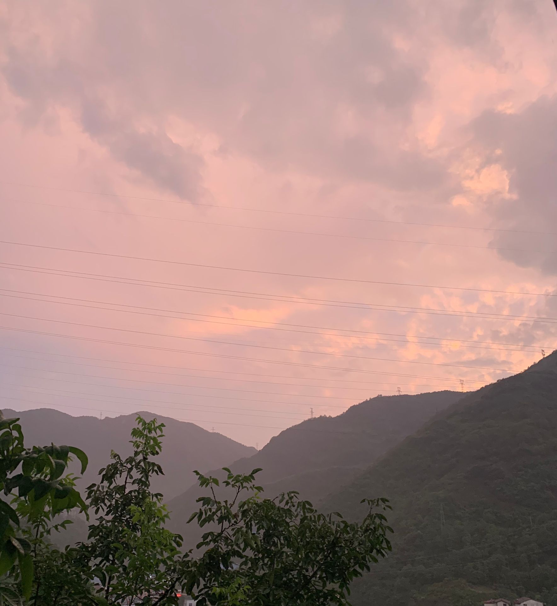
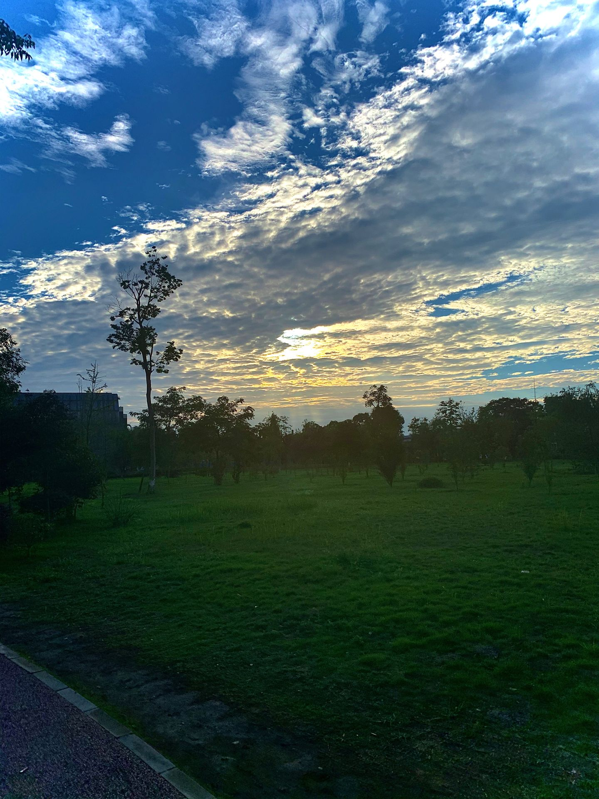
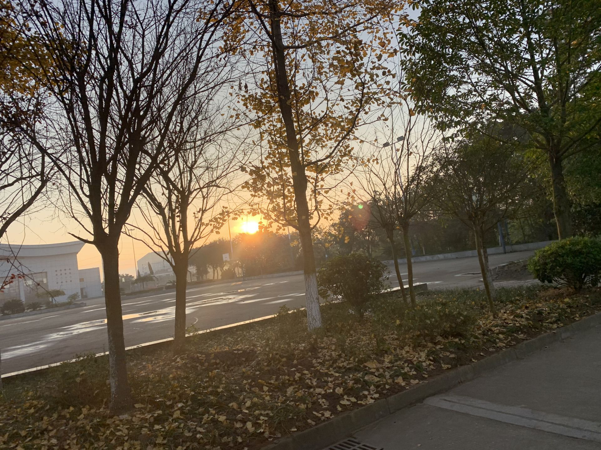
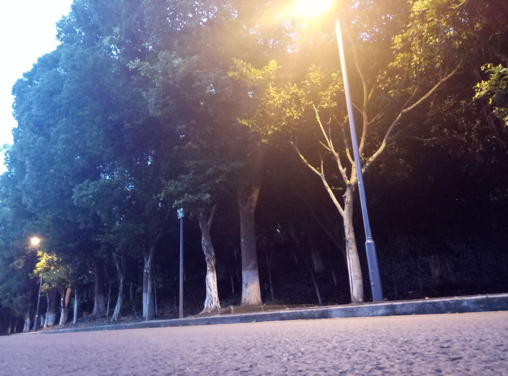

天空刚刚还是一片浅蓝,转眼间东方出现了一道红霞,红霞慢慢地在扩大，不大一会就染红了小半边天。颜色红得可爱， 又 过了一会儿,在那个地方出现了太阳的小半边脸。
当清晨的阳光洒进我们温馨的寝室，忙碌的一天又开始了，闹钟开始响起，每个人睡眼惺忪，从床上爬起，忙忙碌碌的穿梭在食堂与教室之间


温暖的阳光照耀着大地，远处的小山都金灿灿的美轮美奂，它穿梭于微隙的气息。舒倘，漫长。紫檀的香味，弥漫在春日，把天地间一切空虚盈满，阳光下，是一道纤绝的尘陌，呢喃着天真，充盈着那抹曾经深不可测的孤清而飘逸的影。
当晚自习结束后，抬头望向天空，几颗大而亮的星星挂在夜空，仿佛是天上的人儿提着灯笼在巡视那浩瀚的太空。美丽极了，裹紧衣裳，在这优美的夜色中慢慢的走回寝室。
